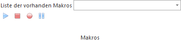
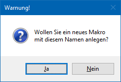
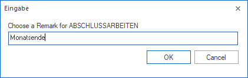
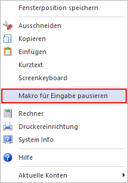
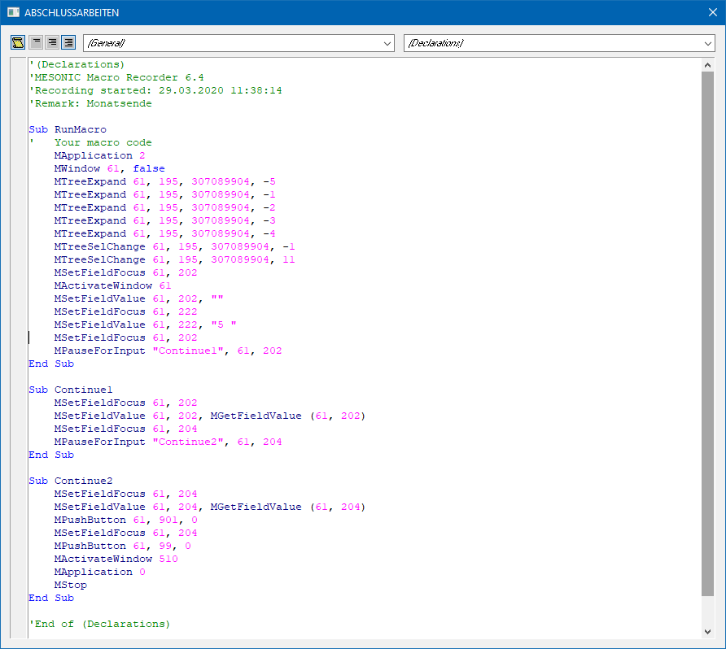

Mit dieser Buttonleiste können Makros (Aufzeichnung von verschiedenen, hintereinander erfolgten Programmabläufen) aufgezeichnet und / oder auch abgespielt werden.
Beispiel
Der Monatsabschluss im WinLine LOHN (Auswertung der Abrechnung, Übermittlung des SV-Beleges an die ELDA, Monatsabschluss etc.) soll "automatisiert" erfolgen.
Ø Eingabefeld
Das Eingabefeld bietet zwei Möglichkeiten
ü Auswahl eines bestehenden
Makros
Aus der Auswahlbox kann ein bereits vorhandenes Makro ausgewählt
werden, welcher dann zur weiteren Bearbeitung bzw. Ausführung zur Verfügung
steht.
ü Anlage eines neuen Makros
Ein
neues Makro kann angelegt werden, indem im Eingabefeld der Name des neuen Makros
eingetragen wird. Wird diese Eingabe bestätigt, erhält man folgende Abfrage, ob
ein neues Makro angelegt werden soll.

Nachdem ein Makro ausgewählt bzw. eingegeben wurde, können zwei Buttons ausgewählt werden:
Ø Makro wiedergeben
Wird dieser Button angeklickt, wird das eingegebene Makro "abgespielt", wobei alle Aktionen wie bei der Aufnahme durchgeführt werden.
Hinweis
Wurde im Makro die Option "Makro für Eingabe pausieren" verwendet, dann bleibt das Makro im entsprechenden Eingabefeld stehen und es kann die erforderliche Eingabe durchgeführt werden. In diesem Fall wird auch der Button "Makro Aufzeichnung pausieren" aktiviert. Das Makro wird durch Drücken der F11-Taste (diese Information wird auch beim entsprechendem Eingabefeld angezeigt) bzw. durch Anklicken des Buttons fortgesetzt.
Ø Makro Aufzeichnen
Wird dieser Button angeklickt, wird die Aufzeichnung des Makros gestartet. Es wird anschließend jede Aktion, die innerhalb der WinLine ausgeführt wird, aufgezeichnet.
Nach Starten der Aufzeichnung kann eine Beschreibung des Makros eingegeben werden.

ü Was ist für die Aufzeichnung zu
beachten?
Das Makro sollte in der Applikation WinLine START starten und in
der Applikation WinLine START enden.
ü Welche Aktionen können
aufgezeichnet werden?
Grundsätzlich werden alle Tastatureingaben
aufgezeichnet. Dazu wird auch jeder Mausklick (z.B. auf den Despoolen-Button
oder auf den Button "Ok") aufgezeichnet.
ü Sind Eingaben während der
Makro-Wiedergabe möglich?
Während der Wiedergabe können auch Eingaben
durchgeführt werden. Hierzu muss während der Aufnahme im gewünschten Feld die
rechte Maustaste geklickt und dann die Option "Makro für Eingabe pausieren"
ausgewählt werden.

Hinweis
Diese Option steht nur in Eingabefeldern zur Verfügung und kann innerhalb einer Tabelle (z.B. "Buchen Dialog Stapel" oder "Belegerfassung") nicht verwendet werden.
Ø Makro Aufzeichnung beenden
Der Button "Makro Aufzeichnung beenden" steht während der Aufzeichnung oder dem Abspielen eines Makros zur Verfügung.
ü Aufzeichnung
Durch Anwahl des
Buttons wird die Aufnahme des Makros gestoppt. Anschließend wird die
Aufzeichnung in einem separaten Fenster in Form von VB-Script angezeigt.
In
diesem Fenster können auch noch notwendige Änderungen vorgenommen werden, wobei
darauf zu achten ist, dass diese Änderungen so vorzunehmen sind, dass der Ablauf
in WinLine nicht beeinträchtigt wird.

ü Wiedergabe
Bei der Wiedergabe
eines Makros kann durch Anwahl des Buttons die Wiedergabe abgebrochen
werden.
Da ein Makros sehr schnell abläuft kann der Button in der Praxis nur
dann angewählt werden, wenn das Makro während der Wiedergabe für eine Eingabe
pausiert.
Ø Makro Aufzeichnung pausieren
Dieser Button wird während der Wiedergabe eines Makros automatisch aktiviert, wenn in dem Makro eine Eingabe definiert wurde. Das Makro kann nach der Eingabe mit Hilfe der Taste F11 oder durch Anwahl des Buttons "Makro Aufzeichnung pausieren" fortgesetzt werden.